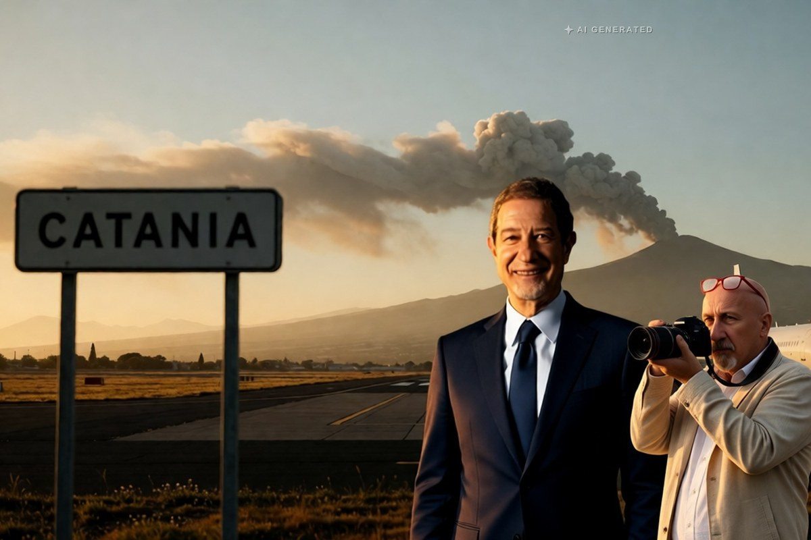

Sicilia · 28 ottobre 2026
Musumeci torna a dire che l'aeroporto di Catania va spostato

Il ministro per la Protezione civile vorrebbe Fontanarossa lontano dalla cenere dell'Etna. Ma la pista la stanno allungando dov'è, con un progetto da oltre trecento milioni approvato dalla giunta regionale che guidava lui.
di Franco Zanghì
Mercoledì 28 ottobre, a Palazzo Chigi, Nello Musumeci ha presentato un convegno nazionale sul dissesto idrogeologico, in programma alle Ciminiere di Catania dal 12 al 14 novembre. E in quella sede è tornato sull'aeroporto di Fontanarossa: ha detto che gli unici fuori posto siamo noi, perché l'Etna è lì da milioni di anni e fa il suo lavoro, e si è augurato che un giorno lo scalo venga spostato nella zona interna dell'isola, per sottrarsi almeno in parte alla cenere.
Non è la prima volta. Ad agosto, in piena emergenza, aveva detto in televisione che fuori posto non era il vulcano ma l'aeroporto, ricordando che già nel 1999, da presidente della Provincia, il piano territoriale prevedeva uno studio per un nuovo scalo nella piana fra Catania ed Enna.
La pista, la cenere e i conti
La pista di Fontanarossa è lunga 2.436 metri, con il mare da una parte e l'Etna dall'altra. Il 27 ottobre l'Osservatorio etneo dell'Ingv ha alzato ad arancione l'allerta per l'aviazione: cenere poca e discontinua, e si è volato regolarmente. Ad agosto era andata diversamente: l'eruzione cominciata il 7 ha fatto saltare più di 700 voli in una settimana, con danni al turismo stimati in almeno 24 milioni di euro, e a fine settembre lo scalo è stato chiuso di nuovo.
Le risposte, in agosto, erano arrivate subito. Nico Torrisi, amministratore delegato della Sac, la società che gestisce Fontanarossa e Comiso, aveva detto che l'idea era già stata bocciata dagli enti preposti e che spostare l'aeroporto non cambierebbe nulla, perché la cenere è arrivata fino a Malta: per lui servono piuttosto autostrade e treni che colleghino gli scali. Il sindaco di Catania Enrico Trantino aveva osservato che uno studio di fattibilità non esiste e che non era il momento di parlarne.
Il progetto approvato dalla sua giunta
Nell'ottobre 2022, nell'ultima seduta della giunta regionale guidata proprio da Musumeci, la Regione ha dato il via libera al progetto per allungare la pista di Fontanarossa fino a 3.100 metri, interrando un tratto della ferrovia Catania-Siracusa. Oltre 300 milioni di euro, disse allora l'assessore alle Infrastrutture; la gara per i lavori ferroviari è stata aggiudicata l'anno successivo.
Le due cose possono anche convivere: allungare la pista oggi e pensare a un altro aeroporto fra trent'anni non è per forza una contraddizione. Ma in quel caso serve un piano, con i numeri, i costi e i tempi, e non una battuta in conferenza stampa. Ad agosto lo stesso Musumeci aveva detto di non avere l'autorità per decidere; un ministro della Protezione civile ha però gli strumenti per chiedere uno studio serio.
Intanto chi deve partire da Catania quando l'Etna si sveglia continua a fare i conti con i voli dirottati a Comiso, a Palermo e a Trapani, e con le ore di pullman che seguono.
Fonti
- La Sicilia, Fabio Russello, «Spostare l'aeroporto nell'interno per sfuggire alla cenere: la provocazione shock di Nello Musumeci», 28 ottobre 2026
- SiciliaWeb, «Musumeci insiste: Fontanarossa va spostato», 28 ottobre 2026
- LiveUniversity Catania, 28 ottobre 2026
- QdS, «Etna e lo stop di Fontanarossa, la proposta di Musumeci», agosto 2026
- Fanpage, «Ad di Sac: spostare l'aeroporto? Proposta bocciata già tempo fa», 13 agosto 2026
- Corriere Etneo, «Trantino sul trasloco di Fontanarossa: non c'è uno studio di fattibilità», 14 agosto 2026
- QdS, delibera della giunta regionale sull'allungamento della pista, ottobre 2022
- Rfi, aggiudicazione dei lavori di interramento Acquicella-Bicocca, 16 giugno 2023
- LiveSicilia, allerta arancione per l'Etna, 27 ottobre 2026
- Il Post, chiusura dell'aeroporto di Catania, 27 settembre 2026
Alla data di pubblicazione non risultano reazioni della Sac, del Comune di Catania o della Regione alle dichiarazioni del 28 ottobre: quelle riportate sono di agosto, quando le opposizioni regionali avevano già criticato il ministro. La cifra di oltre 300 milioni è quella dichiarata nel 2022 dall'allora assessore alle Infrastrutture; il costo aggiornato e lo stato dei lavori non sono stati verificati.